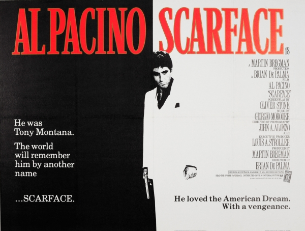

Scarface (1983)
Brian De Palma's dramatic take on the drug trade in Miami starring Al Pacino is a gruesome yet entertaining film with a fantastic set of characters, most infamously Tony Montana, a Cuban refugee determined to achieve the American Dream!